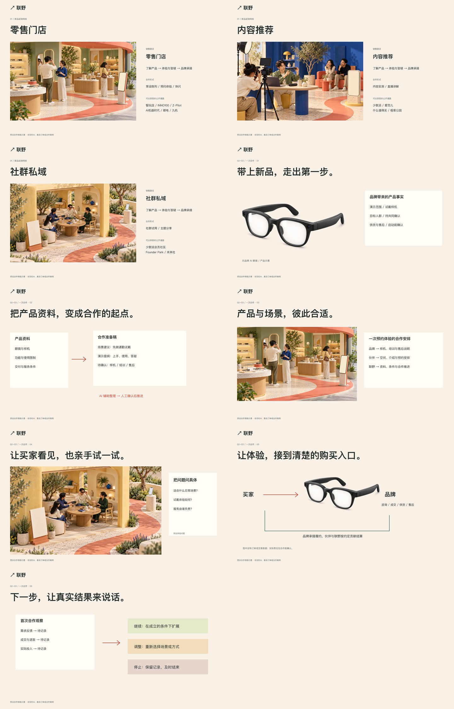

让新品去哪里卖，
看得见，也讲得清楚。
联野V2.1 · 2026-10-18。销售路径与合作形式分层，三幅独立场景、一款示意产品的六步合作。此页供审阅，不是官网内容。
网页实现与本机操作证据已整理。Clay直接用例切换仍未核验，通路资料不等于合作网络，演示不是真实AI或交易。用户审美接受尚未确认；单一目标保留进行中。
真实浏览器录屏
路径中的产品移动、动作与说明变化。预设演示。六步自动演示。实际浏览器录制，非拼接效果稿。
三条独立销售路径
02–03｜六步可操作故事
390手机独立排版
全站其余段落
完整长截图
桌面sticky工作台在长截图中只能展示一个时间状态，需结合上方六步截图和录屏审阅。点击可打开原尺寸。
实现前的状态故事板

原始状态稿保留。手机资料稿等在浏览器验收中已进一步调整，差异见设计规范。